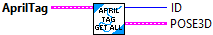
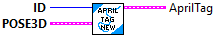

Determine if two April Tag data clusters are equal.
Inputs:
-- AprilTag -- AprilTag -- First data cluster to check
-- OtherAprilTag -- AprilTag -- Second data cluster to check
Outputs:
-- Equal -- Boolean -- TRUE if both data clusters are the same.

Get individual items from the AprilTag data cluster
Inputs:
-- AprilTag -- AprilTag -- Data cluster storing AprilTag
Outputs:
-- ID -- Integer -- AprilTag ID value
-- POSE3d -- Pose3d -- Position of the April Tag. This could be relative or absolute. It is most often absolute position.

Create a new April Tag data cluster
Inputs:
-- ID -- Integer -- April Tag ID value
-- Pose3d - Pose3d -- Position of the April tag. Most often this will be an absolute position. Relative positions can be used.